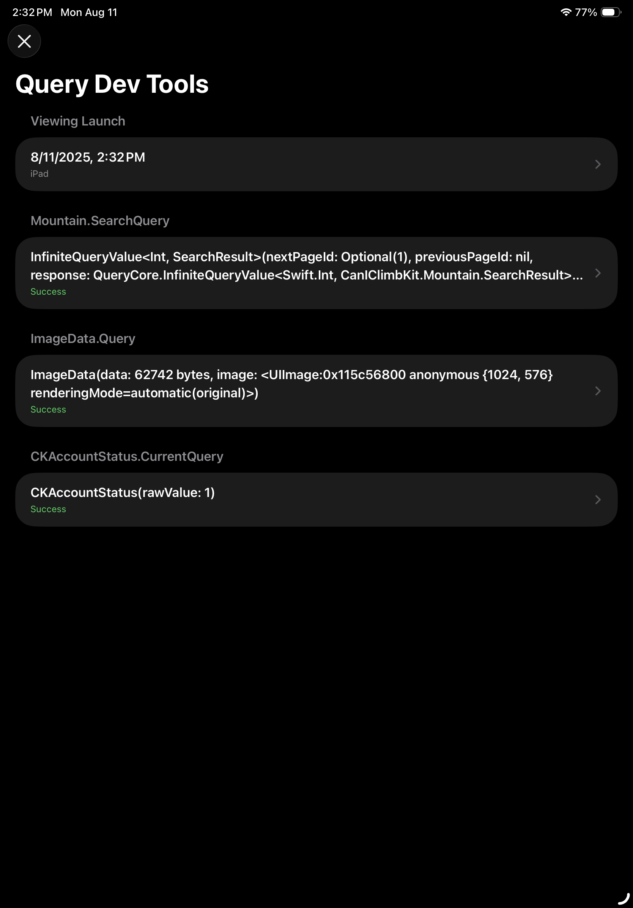

Protocols and Possibility
-- Minutes to Read
I recently dove into looking at Bitwarden’s iOS codebase for fun, and to find resources for other engineers that I work with to learn native the native mobile languages. Since Bitwarden is quite large, they actually have to take architecture seriously from a code readability, testability, and maintainability standpoint, and not leave it off as a nice to have.
Regardless, I saw a lot of massive protocols like this.
protocol AuthService {
var callbackUrlScheme: String { get }
func answerLoginRequest(_ request: LoginRequest, approve: Bool) async throws
func checkPendingLoginRequest(withId id: String) async throws -> LoginRequest
func denyAllLoginRequests(_ requests: [LoginRequest]) async throws
func generateSingleSignOnUrl(from organizationIdentifier: String) async throws -> (url: URL, state: String)
func getPendingAdminLoginRequest(userId: String?) async throws -> PendingAdminLoginRequest?
func getPendingLoginRequest(withId id: String?) async throws -> [LoginRequest]
func hashPassword(password: String, purpose: HashPurpose) async throws -> String
func initiateLoginWithDevice(
email: String,
type: AuthRequestType
) async throws -> (authRequestResponse: AuthRequestResponse, requestId: String)
func loginWithDevice(
_ loginRequest: LoginRequest,
email: String,
isAuthenticated: Bool,
captchaToken: String?
) async throws -> (String, String)
func loginWithMasterPassword(
_ password: String,
username: String,
captchaToken: String?,
isNewAccount: Bool
) async throws
func loginWithSingleSignOn(code: String, email: String) async throws -> LoginUnlockMethod
func loginWithTwoFactorCode(
email: String,
code: String,
method: TwoFactorAuthMethod,
remember: Bool,
captchaToken: String?
) async throws -> LoginUnlockMethod
func requirePasswordChange(
email: String,
isPreAuth: Bool,
masterPassword: String,
policy: MasterPasswordPolicyOptions?
) async throws -> Bool
func resendVerificationCodeEmail() async throws
func resendNewDeviceOtp() async throws
func setPendingAdminLoginRequest(_ adminLoginRequest: PendingAdminLoginRequest?, userId: String?) async throws
func webAuthenticationSession(
url: URL,
completionHandler: @escaping ASWebAuthenticationSession.CompletionHandler
) -> ASWebAuthenticationSession
}
This protocol has 18 requirements, which is quite a lot.
However, I’ve also seen such large protocols parroted around as general advice, though not explicitly. No one is literally saying, “You should make protocols as large as possible!”, but you probably have heard of something called the Repository pattern. An average Repository protocol looks like this.
protocol NotesRepository {
func findNote(by id: UUID) async throws -> Note?
func allNotes(for notebookId: UUID?) async throws -> [Note]
func findNotes(by text: String) async throws -> [Note]
func save(note: Note) async throws
func moveNote(from srcNotebookId: UUID, to dstNotebookId: UUID) async throws
func deleteNote(with ids: Set<UUID>) async throws
}
Even still, 6 protocol requirements is quite a lot. Most protocols that you conform to from most libraries and frameworks, including Apple’s, do not have nearly as many requirements. Or, if those protocols do have lots of requirements, it’s usually an some kind of “delegate” protocol where most of the requirements are optional, and you only end up implementing a small subset of the requirements most of the time.
I would rather have something like this instead of
NotesRepository. Where each protocol defines a small
class of cohesive functionality.
protocol NoteSaver {
func save(note: Note) async throws
}
protocol NoteMover {
func moveNote(from srcNotebookId: UUID, to dstNotebookId: UUID) async throws
}
protocol NoteDeleter {
func deleteNote(with ids: Set<UUID>) async throws
}
protocol NoteFinder {
func findNote(by id: UUID) async throws -> Note?
func allNotes(for notebookId: UUID?) async throws -> [Note]
func findNotes(by text: String) async throws -> [Note]
}
Inevitably, this will turn into a piece about what an optimal protocol size is. Naturally, my answer is of course that “it depends”, but it’s usually not the kind of large protocols that you more commonly see in the wild. Rather, it’s about leaving open as many different conformance possibilities as possible, and large protocols with many requirements tend to not provide many conformance possibilities.
The Case Against Large Protocols
Before jumping in, I don’t want to give the impression that such protocols are always bad. Large protocols are fine if the context they are used in has an answer for the generalized case that I will bring against them.
There are 2 primary pain points that I have with large protocols. First, is the fact that often no parts of your app need to depend on the entire protocol, but rather only a few requirements of it at a time. Second, larger protocols are harder to conform to in general, and are harder to compose (ie. Creating large pieces of functionality by composing smaller conformance’s together).
The main point that you should take away from this is that smaller and easier it is to conform to a protocol, you obtain more possibilities for implementing that protocol. This in turn gives you more options when you need to add or modify a feature in your code.
Unnecessary Dependence
The functionality that often depends on large protocols often only needs a small subset of the requirements (typically only 1-3 in 90% of cases).
For instance, this could be a pure SwiftUI view, view model, or TCA reducer for a UI component only needs to depend on functionality that performs the data actions taken by the user. This could be something like adding a new note an HTTP API when a new note is created through a form. In this case, such a pure view, view model, or reducer only needs to depend on this protocol.
protocol NoteSaver {
func save(note: Note) async throws
}
Yet instead, we often end up depending on this.
protocol NotesRepository {
func findNote(by id: Int) async throws -> Note?
func allNotes(for notebookId: Int?) async throws -> [Note]
func findNotes(by text: String) async throws -> [Note]
func save(note: Note) async throws
func moveNote(from srcNotebookId: Int, to dstNotebookId: Int) async throws
func deleteNote(with ids: Set<Int>) async throws
}
If we’re using Xcode previews, it would be wise to be able to preview what our UI is like when the save operation invoked by a note creation form fails. This allows us to experience the user’s pain as they try-try-try again to use our broken app. We’ll likely rely on a mock to achieve this, because this makes it easy to put the UI in a failing state.
Since our NoteSaver protocol only has a single
requirement, creating a mock is quite easy. In fact, we can just
create it directly in the preview block because it’s so easy. We can
even throw in some fake delay, just to simulate the mindless wait that
our frustrated user will experience for real.
struct AddNoteForm: View {
init(saver: any NoteSaver) {
// ...
}
// ...
}
#Preview {
struct FailingSaver: NoteSaver {
func save(note: Note) async throws {
struct SomeError: Error {}
try await Task.sleep(for: .seconds(3))
throw SomeError()
}
}
AddNoteForm(saver: FailingSaver())
}
Ok… Now let’s decrease the delay to see what happens to a user with a higher speed connection.
#Preview {
struct FailingSaver: NoteSaver {
func save(note: Note) async throws {
struct SomeError: Error {}
- try await Task.sleep(for: .seconds(3))
+ try await Task.sleep(for: .seconds(1))
throw SomeError()
}
}
AddNoteForm(saver: FailingSaver())
}
I can easily do this because our FailingSaver is quite
small and is easy to change in isolation without affecting other
views.
Now instead of depending on small protocol, let’s try previewing
AddNoteForm this while depending on our larger
NoteRepository protocol.
struct AddNoteForm: View {
init(saver: any NoteRepository) {
// ...
}
// ...
}
#Preview {
struct FailingSaver: NoteRepository {
func findNote(by id: Int) async throws -> Note? { nil }
func allNotes(for notebookId: Int?) async throws -> [Note] { [] }
func findNotes(by text: String) async throws -> [Note] { [] }
func save(note: Note) async throws {
struct SomeError: Error {}
try await Task.sleep(for: .seconds(3))
throw SomeError()
}
func moveNote(from srcNotebookId: Int, to dstNotebookId: Int) async throws {}
func deleteNote(with ids: Set<Int>) async throws {}
}
AddNoteForm(saver: FailingSaver())
}
There’s just so many extra requirements to implement here. Having a
bunch of adhoc conformances to NoteRepository would be
quite annoying. Often, most apps will just create a single mock, and
reuse it everywhere because creating many conformance’s is quite
annoying. This mock will need to get large to accommodate artificial
failure modes.
// In some other file...
// This is the only mock conformance to NoteRepository in the app.
final class MockNotesRepository: NoteRepository {
var notes = [Int?: [Note]]()
var savedNotes = [Note]()
var saveError: (any Error)?
var moveError: (any Error)?
var deleteError: (any Error)?
func findNote(by id: Int) async throws -> Note? {
// ...
}
func allNotes(for notebookId: Int?) async throws -> [Note] {
// ...
}
func findNotes(by text: String) async throws -> [Note] {
// ...
}
func save(note: Note) async throws {
// ...
}
func moveNote(from srcNotebookId: Int, to dstNotebookId: Int) async throws {
// ...
}
func deleteNote(with ids: Set<Int>) async throws {
// ...
}
}
Now, if we want to add our artificial delay to saving a note, we have to update the global mock that’s used by all previews. Others may want to do the same, and this leads to contention, and bloating the mock with all sorts of weird functionality.
If we’re like Bitwarden, or we don’t want to end up with code that
regresses constantly, we’ll also likely have a test suite (though this
may be considered optional for some code bases). It turns out that
being able to spin up adhoc mocks is also quite useful in those cases.
For instance, if we drive AddNoteForm with an Observable
model, we may end up with this.
@Observable
class AddNoteFormModel {
init(saver: any NoteSaver) {
// ...
}
// ...
}
@Test("Shows Alert When Failing To Add Note")
func showsAlertWhenFailingToAddNote() async throws {
struct FailingSaver: NoteSaver {
func save(note: Note) async throws {
struct SomeError: Error {}
throw SomeError()
}
}
let model = AddNoteFormModel(saver: FailingSaver())
model.title = "My note"
model.contents = "This is fun"
#expect(model.alert == nil)
await model.submitted()
#expect(model.alert == .failedToSaveNote)
}
If we had made AddNoteFormModel depend on
NotesRepository, this process would again be cumbersome,
and we would likely have to resort to using our one and only
MockNotesRepository.
Now, I don’t think reusing a mock conformance is a bad idea. In fact, it’s a great idea! However, a mock that’s reused everywhere also cannot always have its behavior adjusted for a one-off experiments, previews, or test cases. Continuously adjusting a shared mock in these ways would lead to the shared mock becoming large, complicated, and harder to change over time.
Difficulty of Conformance
Think of protocols as a set of possibilities. That is, a protocol
defines a subset of types that conform to it. The
Equatable protocol defines the subset of types that have
an equality mechanism, and likewise SwiftUI’s
View protocol defines the subset of types that can be
rendered in a user interface. The harder it is to conform to the
protocol, the smaller the subset is. Each type in the subset
represents a different possibility of how its requirements are carried
out.
In other words, protocols that are easy to conform to have many possibilities which means that you have many options for conforming to them. On the flip side, a protocol that is harder to conform to limits the number of options you have for making a conformance.
It goes without saying that smaller protocols are often easier to conform to, and therefore provide more possibilities.
With smaller protocols, you’re more likely to add new behavior to your app by creating a new conformance. With larger protocols, you’re more likely to make changes to the fewer existing conforming types you have directly in order to add new behavior.
Feed Filters DSL
Here’s a small protocol that we’ll call FeedFilter. A
FeedFilter is a mechanism to filter out a specific
content type from a typical social media feed. Note that in this
example, there are multiple different content types, hence the
Content associated type.
protocol FeedFilter<Content> {
associatedtype Content
func shouldIncludeInFeed(content: Content) async -> Bool
}
FeedFilter is an incredibly easy protocol to conform to,
so let’s make our first conformance!
struct ThreadsExcludeIfControversialFilter: FeedFilter {
let preferences: Preferences
func shouldIncludeInFeed(content: Thread) -> Bool {
self.preferences.threadFilterControvesyRate < content.downvotePercentage
}
}
That was easy! Let’s make another!
struct ThreadsExcludeIfDownvotedFilter: FeedFilter {
func shouldIncludeInFeed(content: Thread) -> Bool {
content.userVote != .downvote
}
}
Now, what if we want to create a filter that excludes thread if either
the user downvoted them, or if the thread if controversial? We can
certainly make a
ThreadsExcludeIfDownvotedOrControversialFilter, but now
we’re getting into
AbstractSingletonProxyFactoryBean territory. All we’re
trying to do either is run 1 filter before the other, so let’s make a
simple conformance to do just that.
extension FeedFilter {
func run(
before other: some FeedFilter<Content>
) -> some FeedFilter<Content> {
RunBeforeFilter(a: self, b: other)
}
}
private struct RunBeforeFilter<
A: FeedFilter,
B: FeedFilter
>: FeedFilter where A.Content == B.Content {
let a: A
let b: B
func shouldIncludeInFeed(content: A.Content) async -> Bool {
guard await self.a.shouldIncludeInFeed(content: content) else {
return false
}
return await self.b.shouldIncludeInFeed(content: content)
}
}
Now we can easily create our
downvotedOrControvesialFilter like so.
let downvotedOrControversial = ThreadsExcludeIfControversialFilter()
.run(before: ThreadsExcludeIfDownvotedFilter())
In fact RunBeforeFilter works for any content type, and
any 2 filters with the same content type. Now let’s try making another
conformance that also doesn’t care too much about the content type.
For instance, lots of scrollable content on social media contains some
very forbidden words. Let’s make a filter to filter those words.
protocol HiddenPhrasesFilterable {
var language: Language { get }
var textBlocks: [(String, HiddenPhraseOptions)] { get }
}
struct HiddenPhrasesFilter<Content: HiddenPhrasesFilterable>: FeedFilter {
let phrases: HiddenPhrases
func shouldIncludeInFeed(content: Content) -> Bool {
// Tokenize the content by word with NLTokenizer and use a trie
// to efficiently match phrases in HiddenPhrases...
}
}
I’ve omitted the implementation of
HiddenPhrasesFilter for brevity, but suffice to say it
used the algorithm described by the comment above. However, the main
point was that we now have a filter that works on any kind of content
that conforms to HiddenPhrasesFilterable.
Finally, let’s make a simple conformance that works with
Comments instead of just Threads.
struct CommentExcludeIfNoRepliesFilter: FeedFilter {
func shouldIncludeInFeed(content: Comment) -> Bool {
content.replyCount > 0
}
}
We can keep going, but the gist of this is that we can reuse filtering logic to create separate content filtering pipelines. I ended up with something like this.
extension FeedFilter where Content == Thread {
static func defaultThreads(
preferences: Preferences,
accountsActor: some SavedAccountsActor
) -> some FeedFilter<Content> {
NSFWFilter(preferences: preferences)
.run(
before: ThreadsExcludeIfUserDownvotedFilter()
.onlyRunIf { preferences.shouldFilterDownvotedThreads }
)
.run(
before: ThreadsExcludeIfControversialFilter(preferences: preferences)
.onlyRunIf { preferences.shouldFilterControversialThreads }
)
.run(
before: ContentMarkerFilter(
accountsActor: accountsActor,
contentMarker: .markedAsReadThreads
)
.onlyRunIf { preferences.shouldFilterThreadsMarkedAsRead }
)
.run(
before: ContentMarkerFilter(
accountsActor: accountsActor,
contentMarker: .hiddenThreads
)
)
.run(before: HiddenPhrasesFilter(phrases: preferences.hiddenPhrases))
.keepingCurrentUserContent(using: accountsActor)
}
}
extension FeedFilter where Content == Comment {
static func defaultPosts(
preferences: Preferences,
accountsActor: some SavedAccountsActor
) -> some FeedFilter<Content> {
NSFWFilter(preferences: preferences)
.run(
before: ContentMarkerFilter(
accountsActor: accountsActor,
contentMarker: .hiddenComments
)
)
.run(
before: CommentExcludeIfNoRepliesFilter()
.onlyRunIf { preferences.shouldFilterUnrepliedComments }
)
.run(before: HiddenPhrasesFilter(phrases: preferences.hiddenPhrases))
.keepingCurrentUserContent(using: accountsActor)
}
}
// More content types...
Adding new filtering logic was incredibly easy, because
FeedFilter was easy to conform to. The filters were also
relatively isolated from each other, and only handled a small concern,
which made them easy to compose together into a larger and more
meaningful filter.
Composing Persistence Based Protocols
Now for a point of consideration, would you do what we did above with
NotesRepository?
Likely not because in many cases you would find it cumbersome, but
you’re probably also questioning why we would need to in the first
place. NotesRepository is an interface that implements IO
for notes, and that IO has a very specific data store (HTTP API, Local
Database, etc.). Therefore, if the implementation is just simple IO
calls, then why is there a need for the kind of composition that you
see with FeedFilter?
This point is true in most cases with persistence, but that doesn’t mean that you want to leave out options arbitrarily. As long as the overall operation can be split into different parts cleanly, you can still rely on this composition. In fact, persistence has many mechanisms which are composable.
This composability is literally why I decided to author
Swift Operation, and that library actually provides a similar DSL as
FeedFilter for any async operation.
extension Post {
static func query(for id: ID) -> some QueryRequest<Post, Query.State> {
Self.$query(id: id).retry(limit: 3)
.refetchOnChange(
of: .connected(to: NWPathMonitorObserver.startingShared())
)
.deduplicated()
}
@QueryRequest
private static func query(id: ID) async throws -> Post {
// ...
}
}
Just like that, we’ve configured retries, deduplication, and the ability to refetch the post when the user’s network connection flips from offline to online. This works for more than just network requests by the way, it also works for calls to Apple Frameworks, and much more.
You can create new building blocks of functionality by conforming to
the OperationModifier protocol. For instance, here’s a
simple one that adds artificial delay to an operation. You might
wonder why you want to do that. It turns out that in Xcode previews,
it’s very helpful to add such delay to see what the user experiences
when their connection is slow.
struct DelayModifier<Operation: OperationRequest>: OperationModifier {
let delay: TimeInterval
func fetch(
isolation: isolated (any Actor)?,
in context: OperationContext,
using operation: Operation,
with continuation: OperationContinuation<Operation.Value>
) async throws -> Operation.Value {
try await context.delayer.delay(for: delay)
return try await operation.run(isolation: isolation, in: context, with: continuation)
}
}
extension OperationRequest {
func delay(for duration: TimeInterval) -> ModifiedOperation<Self, DelayModifier<Self>> {
self.modifier(DelayModifier(delay: duration))
}
}
@QueryRequest
func myQuery() async throws -> SomeData {
// ...
}
let myQuery = $myQuery.delay(for: 0.3)
In the demo app for Swift Operation, I’ve even implemented such a
modifier that persists the results of each query to a database. This
allowed me to create dev tools that provide the opportunity to inspect
any query made by the app. Thanks to
SQLiteData, the results are even synced across iCloud, and can be viewed from
any device.
extension StatefulOperationRequest where Self: Sendable {
public func analyzed() -> ModifiedOperation<Self, _AnalysisModifier<Self>> {
self.modifier(_AnalysisModifier())
}
}
public struct _AnalysisModifier<
Operation: StatefulOperationRequest & Sendable
>: OperationModifier, Sendable {
public func run(
isolation: isolated (any Actor)?,
in context: OperationContext,
using query: Operation,
with continuation: OperationContinuation<Operation.Value, Operation.Failure>
) async throws(Operation.Failure) -> Operation.Value {
@Dependency(\.defaultDatabase) var database
@Dependency(\.continuousClock) var clock
@Dependency(ApplicationLaunch.ID.self) var launchId
@Dependency(\.uuidv7) var uuidv7
let yields = Mutex([Result<Operation.Value, Operation.Failure>]())
let continuation = OperationContinuation<Operation.Value, Operation.Failure> {
result,
context in
yields.withLock { $0.append(result) }
continuation.yield(with: result, using: context)
}
var result: Result<Operation.Value, Operation.Failure>!
let time = await clock.measure {
result = await Result { @Sendable () async throws(Operation.Failure) -> Operation.Value in
try await query.run(isolation: isolation, in: context, with: continuation)
}
}
let analysis = OperationAnalysis(
id: OperationAnalysis.ID(uuidv7()),
launchId: launchId,
operation: query,
operationRetryAttempt: context.operationRetryIndex,
operationRuntimeDuration: time,
yieldedResults: yields.withLock { $0 },
finalResult: result
)
await withErrorReporting {
try await database.write {
try OperationAnalysisRecord.insert { OperationAnalysisRecord.Draft(analysis) }.execute($0)
}
}
return try result.get()
}
}

Suffice to say, doing this would be incredibly difficult with larger
protocols, as you would have to add the above behavior to each
requirement. Since OperationModifier is a small protocol
with a requirement, it was quite easy to add this Dev Tools interface,
as well as artificial delay, and much more that you can find in the
library.
Addressing Alternatives and Concerns
Now that I’ve laid out the case against large protocols, I want to spend some time going through many strategies that I’ve seen in the community to address some of the problems of large protocols.
Struct Based Interfaces
For the point on mocking, one may try to turn to a mutable struct of closures instead of a protocol. PointFree has been the primary advocate for this style as far as I can tell, and the docs of Swift Dependencies even have an entire article on this.
In other words, we would make NotesRepository a struct
like this.
import Dependencies
@DependencyClient
struct NotesRepository {
var findNote: @Sendable (_ id: Int) async throws -> Note?
var allNotes: @Sendable (_ notebookId: Int?) async throws -> [Note]
var findNotes: @Sendable (_ text: String) async throws -> [Note]
var save: @Sendable (note: Note) async throws -> Void
var moveNote: @Sendable (from srcNotebookId: Int, to dstNotebookId: Int) async throws -> Void
var deleteNote: @Sendable (with ids: Set<Int>) async throws -> Void
}
Now in tests, we can override specific properties to provide a mock value.
@Test("Shows Alert When Failing To Add Note")
func showsAlertWhenFailingToAddNote() async throws {
try await withDependencies {
struct SomeError: Error {}
$0[NotesRepository.self].save = { _ in throw SomeError() }
} operation: {
// AddNoteFormModel would access NotesRepository through the
// @Dependency property wrapper.
let model = AddNoteFormModel()
model.title = "My note"
model.contents = "This is fun"
#expect(model.alert == nil)
await model.submitted()
#expect(model.alert == .failedToSaveNote)
}
}
For the record, I used to use this style extensively. However, I often found myself repeating the same patterns of code over and over again for each test.
@Test("Something")
func something() async throws {
try await withDependencies {
struct SomeError: Error {}
$0[NotesRepository.self].save = { _ in throw SomeError() }
} operation: {
// ...
}
}
@Test("Other Thing")
func otherThing() async throws {
try await withDependencies {
struct SomeError: Error {}
$0[NotesRepository.self].save = { _ in throw SomeError() }
} operation: {
// ...
}
}
// So on...
Another annoying thing about this pattern has to do with spies
explicitly. In many cases, you need to use something like
Mutex to capture the value passed to the dependency
closure, and repeating this is not very fun either.
import Synchronization
@Test("Spy Save")
func spySave() async throws {
let savedNotes = Mutex([Note]())
try await withDependencies {
$0[NotesRepository.self].save = { note in
savedNotes.withLock { $0 = note }
}
} operation: {
// ...
}
}
If we want to do domain specific asserts on the spied values, we’re also out of luck because we cannot just add an additional API to a struct of closures that returns a property captured by those closures.
In the long run, I’ve often reduced duplication by creating simple and reusable mocks that conform to a small protocol.
struct FailingSaver: NoteSaver {
func save(note: Note) async throws {
struct SomeError: Error {}
throw SomeError()
}
}
@MainActor
final class SpySaver: NoteSaver {
private(set) var savedNotes = [Note]()
// We also get domain-specific asserts with this approach.
func expectSaved(_ note: Note) {
#expect(self.savedNotes.contains(note))
}
func save(note: Note) async throws {
self.savedNotes.append(note)
}
}
Despite these flaws, I actually think structs with closures are great
for certain kinds of problems. For instance, I often find myself
relying on bags of closures over creating a
Delegate protocol because delegates are often created in
an adhoc fashion.
extension HapticaExtension {
public struct Delegate: Sendable {
public var onJavaScriptExceptionThrown:
(@Sendable (HapticaExtension, JavaScriptException) -> Void)?
public var onMetadataUpdated: (@Sendable (HapticaExtension, HapticaExtensionMetadata) -> Void)?
public init(
onJavaScriptExceptionThrown: (
@Sendable (HapticaExtension, HapticaExtension.JavaScriptException) -> Void
)? = nil,
onMetadataUpdated: (@Sendable (HapticaExtension, HapticaExtensionMetadata) -> Void)? = nil
) {
self.onJavaScriptExceptionThrown = onJavaScriptExceptionThrown
self.onMetadataUpdated = onMetadataUpdated
}
}
}
In other words, if the operation is very adhoc and is tightly coupled
to what the caller is doing (eg. The operation would change the
caller’s state somehow.), then I think closures suit that use case
better. Delegates are a perfect example of this, but many well-known
APIs also accept simple closures such as initializer of
Task.
Small Protocols are a lot of Boilerplate
I won’t deny this, but a small increase in typing speed is not worth time lost in friction. That is to say, I would rather deal with a bit of boilerplate over not being able to rapidly iterate.
Perhaps you may also be thinking that I would advocate for small types to conform to the small protocols. Naturally, this would result in an explosition of small classes.
protocol NoteSaver {
func save(note: Note) async throws
}
final class APINoteSaver: NoteSaver {
init(api: NotesAPI) {
// ...
}
}
protocol NoteDeleter {
func deleteNote(with id: Int) async throws
}
final class APINoteDeleter: NoteSaver {
init(api: NotesAPI) {
// ...
}
}
Obviously, this would get quite annoying. Thankfully, Swift lets you extend existing types to conform to protocols you own after the fact. In most cases, I usually have a larger class that implements many of these small protocols.
final class NotesAPI {
// ...
}
extension NotesAPI: NoteSaver {
// ...
}
extension NotesAPI: NoteDeleter {
// ...
}
Protocols represent possibilities, and so I would rather leave the
option for either a small class or large class to conform to them. For
instance, maybe we want to save the note to a local file as well as
the backend when it’s saved. We can address that with a simple
conformance without having to modify NotesAPI.
struct FileSaver<Base: NoteSaver>: NoteSaver {
let base: Base
let baseURL: URL
func save(note: Note) async throws {
try await self.base.save(note: note)
try JSONEncoder().encode(note)
.write(to: self.baseURL.appending(path: "\(note.id).json")
}
}
let fileAPISaving = FileSaver(base: NotesAPI.shared)
With the old NotesRepository approach, our only
reasonable option would’ve added this file saving functionality on to
our 1 potentially massive conforming type.
final class DefaultNotesRepository: NotesRepository {
private let api: NotesAPI
private let baseURL: URL
// ...
init(api: NotesAPI, let baseURL: URL) {
// ...
}
// ...
func save(note: Note) async throws {
try await self.api.save(note: note)
try JSONEncoder().encode(note)
.write(to: self.baseURL.appending(path: "\(note.id).json")
}
// ...
}
I want to make clear that I’m not necessarily advocating for the small-conformance style as the best way to implement local persistence on top of an HTTP API. In most cases, I would directly implement it alongside the API call in a larger conformance because that would be easier to understand.
However, small protocols leaves open small conformances as an
option, and that option may fit your context better than
integrating it directly inside DefaultNotesRepository. If
we had more requirements to implement behind the
NotesRepository protocol, then it’s likely that we would
have to keep bloating DefaultNotesRepository. If the
implementation starts to become a bit bloated, it may be easier to add
new behavior to the overall operation of saving a note with a smaller
conformance.
Sometimes, an explosion of small conforming types is what we want (eg. SwiftUI Views), but other times we want larger and more cohesive conforming types. Small protocols give you both options, whereas larger ones don’t.
You can just Autogenerate Mocks with a Package (Mockingbird, SwiftyMocky, etc.)
Outside of the obvious dependency problem this has, the other pain point is that these kinds of packages tend to own the entire generation pipeline for the mocks, and they often cannot be modified after the fact. I actually think that this is worse than spending the time to create your own larger and global mock. At least the “one large mock” can be edited by its creators to accommodate different scenarios.
Mocks are Bad Lmao
In many cases this is true, and I certainly don’t advocate for mocking everything. Without making this an entire piece on my opinion on mocks, sometimes it’s just ok to use them as a weapon in your arsenal. In fact, when I do mock a protocol for 1 suite of tests, I’ll often have another suite of tests that test the live implementation of the mocked protocol.
Furthermore, I don’t want “mocking” to be the main idea that comes out of this piece. Smaller protocols certainly make mocking easier, but the larger idea is possibility. Mocking itself is a possibility.
What if I need a Large Protocol?
Then make one.
Alternatively, you can create larger protocols by composing smaller
ones. This is how Codable is done, and you can do it with
your own protocols too.
typealias NotesRepository = NoteSaver & NoteDeleter & NotesFinder
// OR Alternatively (this requires conforming types to explicitly
// conform to NotesRepository)
protocol NotesRepository: NoteSaver, NoteDeleter, NotesFinder {}
When should I use a Large Protocol?
The answer to this largely depends on how its is used.
Take this scenario.
protocol Large {
func r1()
func r2()
func r3()
func r4()
// All the way to r8...
}
func foo(using large: some Large) {
large.r1()
large.r2()
large.r3()
large.r4()
// All the way to r8...
}
Since foo uses all the requirements from
Large, then Large is a properly sized
protocol because there is no unnecessary dependence. Additionally, we
may not need a ton of possibility towards how Large is
implemented, so in this case a large protocol is a decent trade-off.
Another thing to consider on the unnecessary dependence point is that the protocol has a cohesive set of requirements. For instance.
extension ScheduleableAlarm {
public protocol Authorizer: AnyObject, Sendable {
associatedtype Statuses: AsyncSequence<ScheduleableAlarm.AuthorizationStatus, Never>
func requestAuthorization() async throws -> AuthorizationStatus
func statuses() -> Statuses
}
public enum AuthorizerKey: DependencyKey {
public static var liveValue: any Authorizer {
// ...
}
}
}
extension ScheduleableAlarm.AuthorizationStatus {
public struct UpdatesKey: SharedReaderKey {
private let authorizer: any ScheduleableAlarm.Authorizer
// ...
public func subscribe(
context: LoadContext<Value>,
subscriber: SharedSubscriber<Value>
) -> SharedSubscription {
let task = Task.immediate {
for await status in self.authorizer.statuses() {
withAnimation { subscriber.yield(status) }
}
}
return SharedSubscription { task.cancel() }
}
}
}
In this case UpdatesKey only uses the
statuses requirement from
ScheduleableAlarm.Authorizer. Yet, I still think
ScheduleableAlarm.Authorizer is properly sized for
because its requirements are coherent (ie. Requesting authorization
would be expected to have an impact on the status updates.), and
because it is still easy to conform to (ie. It only has 2
requirements.).
Another thing could be that the protocol has default implementations for many of its requirements.
public protocol QueryRequest<Value, State>: QueryPathable, Sendable
where State.QueryValue == Value {
associatedtype Value: Sendable
associatedtype State: QueryStateProtocol = QueryState<Value?, Value>
var _debugTypeName: String { get }
var path: QueryPath { get }
func setup(context: inout QueryContext)
func fetch(
in context: QueryContext,
with continuation: QueryContinuation<Value>
) async throws -> Value
}
extension QueryRequest {
public var _debugTypeName: String { typeName(Self.self) }
public func setup(context: inout QueryContext) {
}
}
extension QueryRequest where Self: Hashable {
public var path: QueryPath {
QueryPath(self)
}
}
In this case, the only real requirement that a conformance often needs
to implement is fetch.
extension Post {
struct Query: QueryRequest, Hashable {
let id: Int
func fetch(
in context: QueryContext,
with continuation: QueryContinuation<Post>
) async throws -> Post {
let url = URL(string: "https://jsonplaceholder.typicode.com/posts/\(id)")!
let (data, _) = try await URLSession.shared.data(from: url)
return try JSONDecoder().decode(Post.self, from: data)
}
}
}
Making Large Protocols Composable
You may be surprised to hear that it’s still possible to achieve much of the compositional benefits of smaller protocols with large protocols as well if you’re willing to write an entire modifier system.
Swift Operation takes this approach because the
OperationRequest and
StatefulOperationRequest protocols have a bunch of
annoying requirements that don’t need to be considered when
implementing composable behavior.
public protocol OperationRequest<Value, Failure> {
associatedtype Value
associatedtype Failure: Error
var _debugTypeName: String { get }
func setup(context: inout OperationContext)
func run(
isolation: isolated (any Actor)?,
in context: OperationContext,
with continuation: OperationContinuation<Value, Failure>
) async throws(Failure) -> Value
}
public protocol StatefulOperationRequest<State>: OperationRequest
where Value: Sendable, State.OperationValue == Value, State.Failure == Failure {
associatedtype State: OperationState
var path: OperationPath { get }
}
If you were to implement composable behavior with
OperationRequest, chances are that you would forget to
forward _debugTypeName, _path, or
setup. This is why the library defines a simpler
OperationModifier protocol.
public protocol OperationModifier<Value, Failure> {
associatedtype Operation: OperationRequest
associatedtype Value
associatedtype Failure: Error
func setup(context: inout OperationContext, using operation: Operation)
func run(
isolation: isolated (any Actor)?,
in context: OperationContext,
using operation: Operation,
with continuation: OperationContinuation<Value, Failure>
)
}
The library then provides a query called
ModifiedOperation, which does the hard work of adapting
your OperationModifier to work with an
OperationRequest.
public struct ModifiedOperation<
Operation: OperationRequest,
Modifier: OperationModifier
>: OperationRequest where Modifier.Operation == Operation {
public typealias Value = Modifier.Value
public let operation: Operation
public let modifier: Modifier
@inlinable
public var _debugTypeName: String {
self.operation._debugTypeName
}
@inlinable
public func setup(context: inout OperationContext) {
self.modifier.setup(context: &context, using: self.operation)
}
@inlinable
public func run(
isolation: isolated (any Actor)?,
in context: OperationContext,
with continuation: OperationContinuation<Modifier.Value, Modifier.Failure>
) async throws(Modifier.Failure) -> Modifier.Value {
try await self.modifier.run(
isolation: isolation,
in: context,
using: self.operation,
with: continuation
)
}
}
extension ModifiedOperation: StatefulOperationRequest
where
Modifier.Operation: StatefulOperationRequest,
Operation.Value == Modifier.Value,
Operation.Failure == Modifier.Failure
{
public typealias State = Operation.State
@inlinable
public var path: OperationPath {
self.operation.path
}
}
SwiftUI also takes this approach for adapting composability for views.
For instance, the View protocol from SwiftUI actually
looks something like this.
public protocol View {
nonisolated static func _makeView(view: _GraphValue<Self>, inputs: _ViewInputs) -> _ViewOutputs
nonisolated static func _makeViewList(view: _GraphValue<Self>, inputs: _ViewListInputs) -> _ViewListOutputs
nonisolated static func _viewListCount(inputs: _ViewListCountInputs) -> Int?
associatedtype Body: View
@ViewBuilder
@MainActor
@preconcurrency
var body: Self.Body { get }
}
However, you don’t ever implement those top 3 requirements. In fact,
you may not even have known about their existence because Xcode
doesn’t show them! Instead, a few select primitive views from SwiftUI
(eg. Text) implement those requirements whilst a default
implementation is used for the typical views that you create in your
app. Even if you tried to implement those requirements, chances are is
that it would be impossible because they use types that are largely
internal to SwiftUI.
This is why SwiftUI provides a ViewModifier and the
ModifiedContent view if you want to add composable
behavior to your views. ModifiedContent is a special view
that adapts your ViewModifier into a legitimate SwiftUI
view by providing proper implementations of
_viewListCount, _makeViewList, and
_makeView based on the child content in the view.
public struct ModifiedContent<
Content: View,
Modifier: ViewModifier
>: View {
public let content: Content
public let modifier: Modifier
// See: https://github.com/OpenSwiftUIProject/OpenSwiftUI/blob/main/Sources/OpenSwiftUICore/Modifier/ViewModifier.swift
public static func _makeView(
view: _GraphValue<Self>,
inputs: _ViewInputs
) -> _ViewOutputs {
Modifier.makeDebuggableView(
modifier: view[offset: { .of(&$0.modifier) }],
inputs: inputs
) {
Content.makeDebuggableView(
view: view[offset: { .of(&$0.content) }],
inputs: $1
)
}
}
// ...
}
extension View {
public func modifier<Modifier>(
_ modifier: Modifier
) -> ModifiedContent<Self, Modifier> {
// ...
}
}
Conclusion
The more possibilities that your protocol provides, the easier it is to add new features, perform one-off experiments, and make changes to your code. Possibility comes by making your protocols easy to conform to, which often means making them small with simpler requirements.
When you have possibility, it doesn’t matter if a “god” class, a tiny one-off handwritten mock, or an entire DSL implements the protocol. The important part is that you have the possibility to do any of those things in the first place.
Unnecessary dependence on large protocols hinders the amount of possibility for no good reason because it requires a larger than necessary conformance. Furthermore, a large protocols with a bunch of requirements, such as a “Repository” protocol, also hinders possibility because there is more friction when conforming to larger protocols.
However, if a large protocol can counter those 2 points in your context, then feel free to create one. Additionally, you may find that you can create a large protocol by composing it from smaller protocols.
Lastly, you should check out Swift Operation, it handles a lot of pain around asynchronous state management and data fetching for you.
— 11/13/25